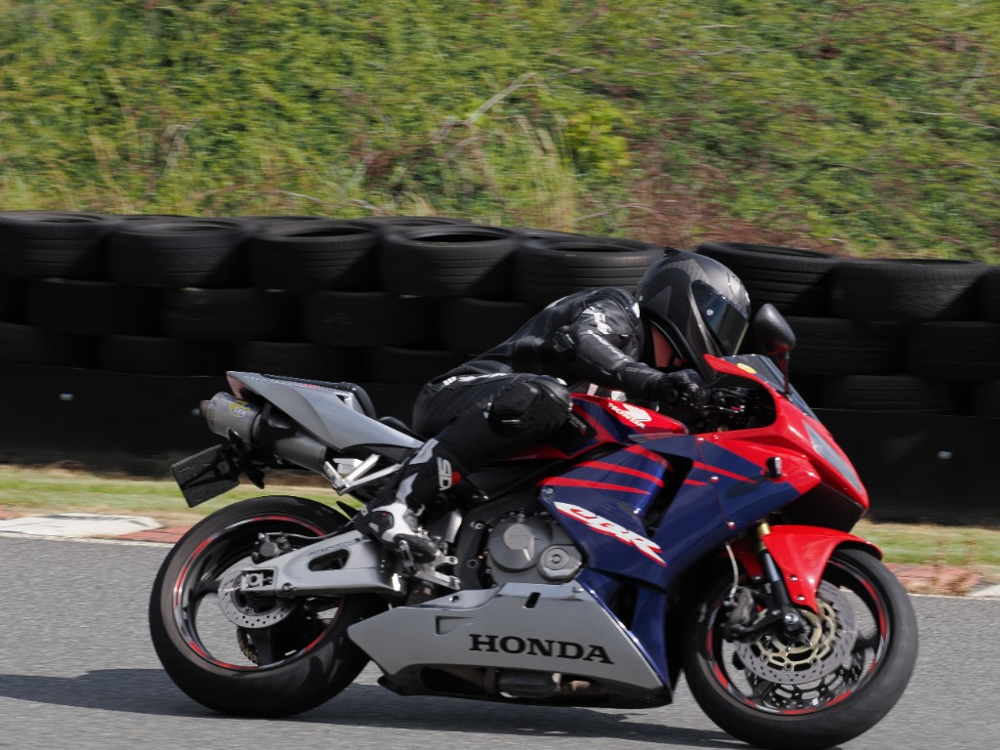
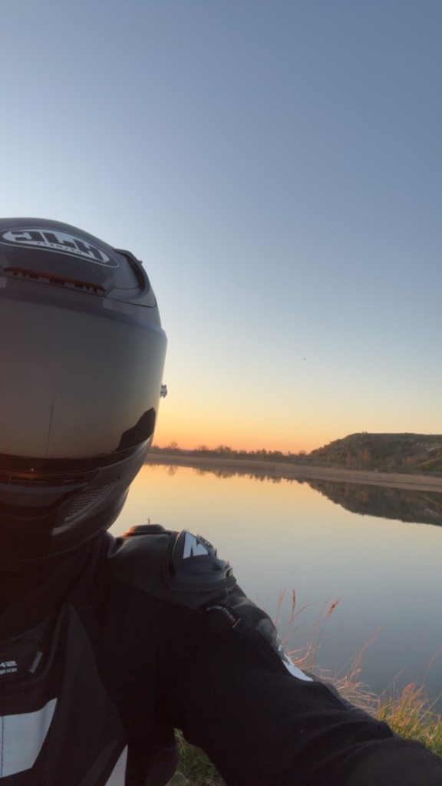
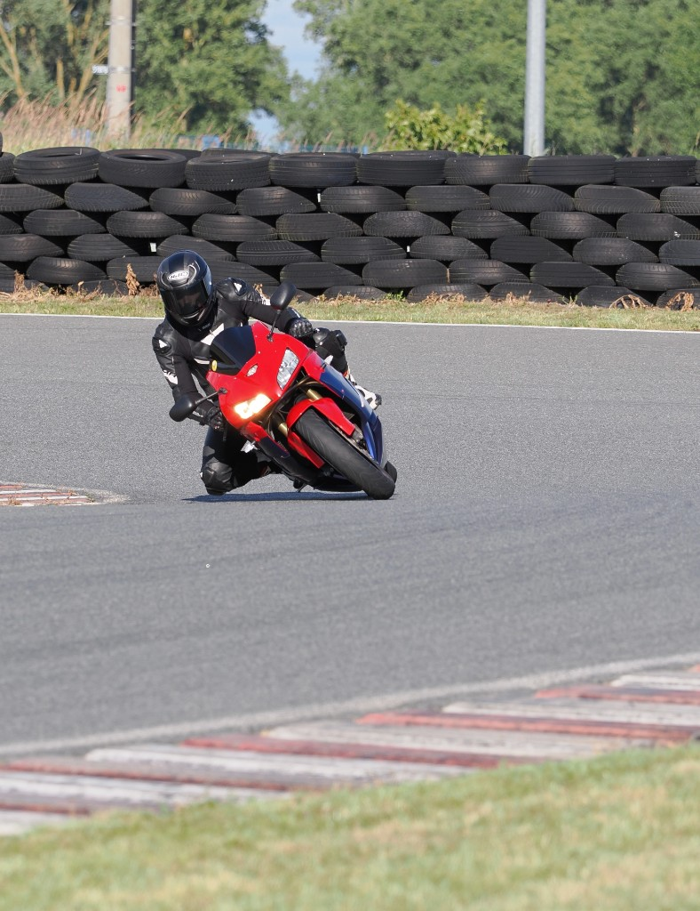
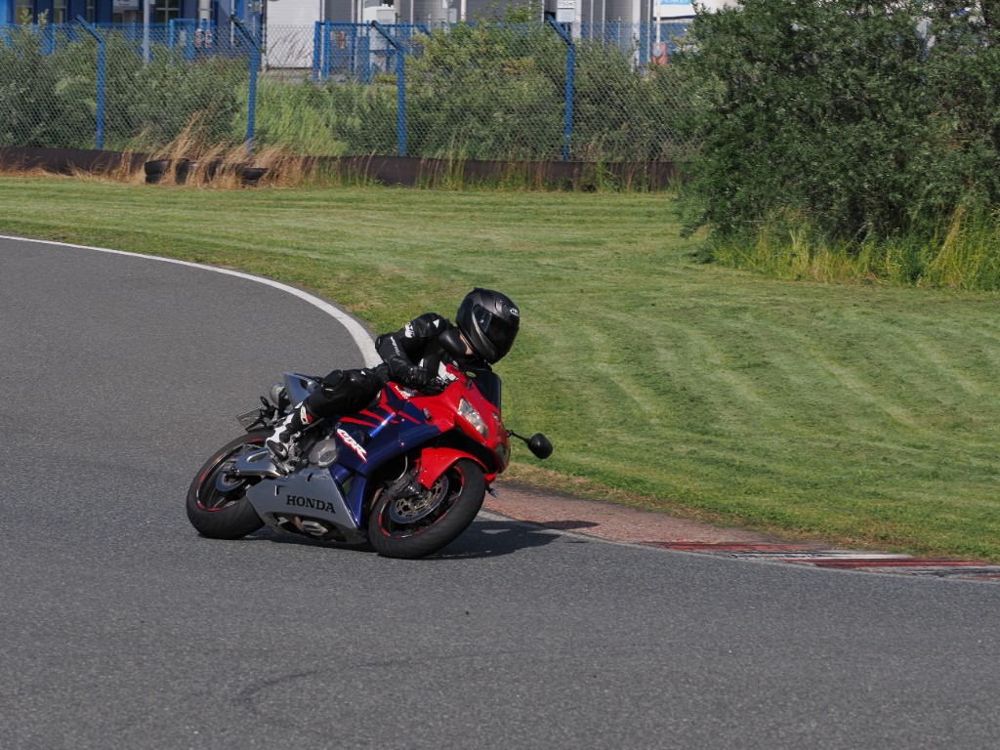
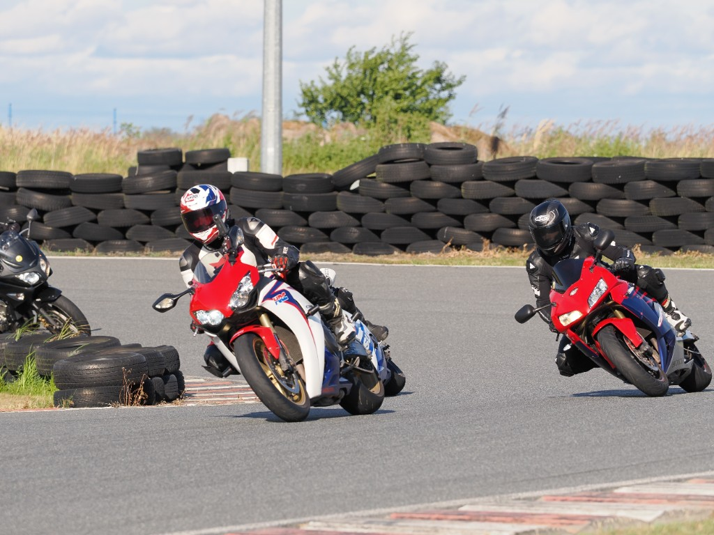
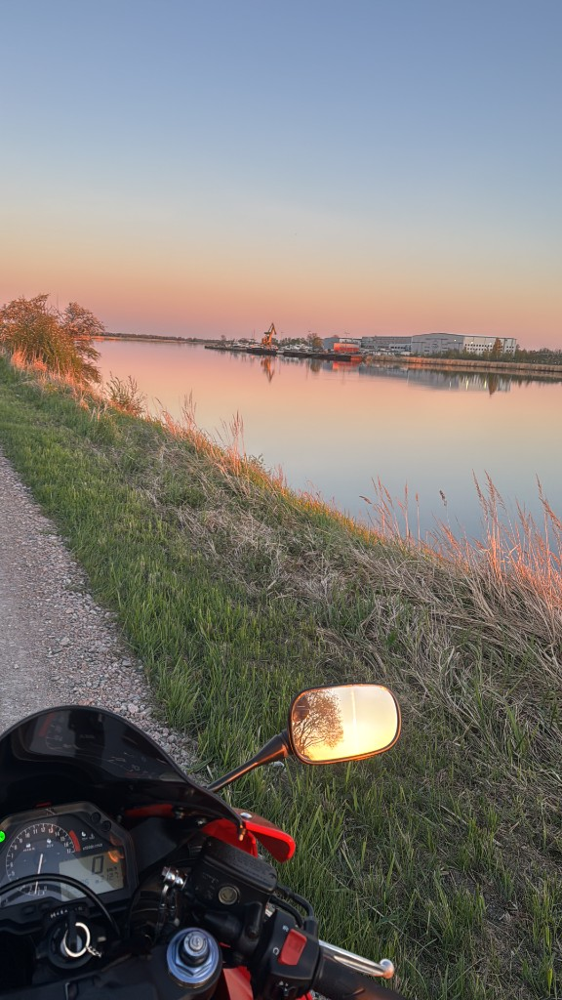
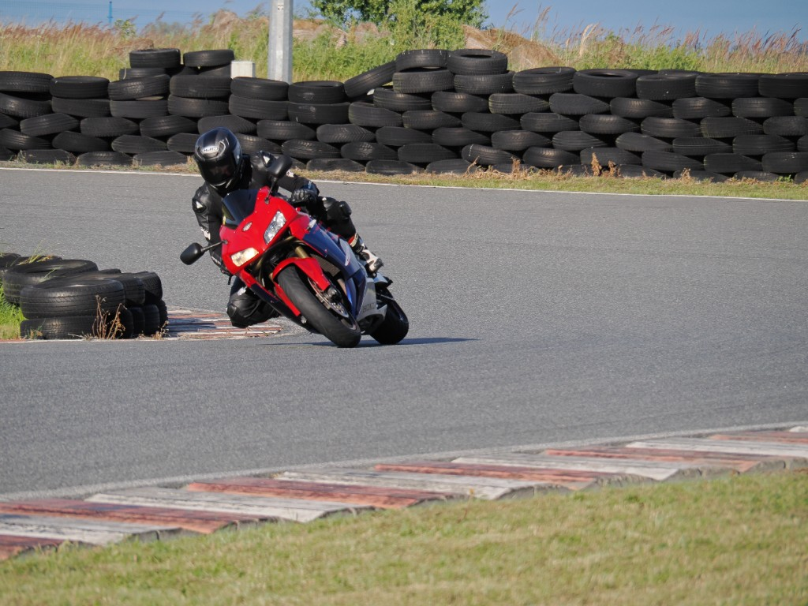
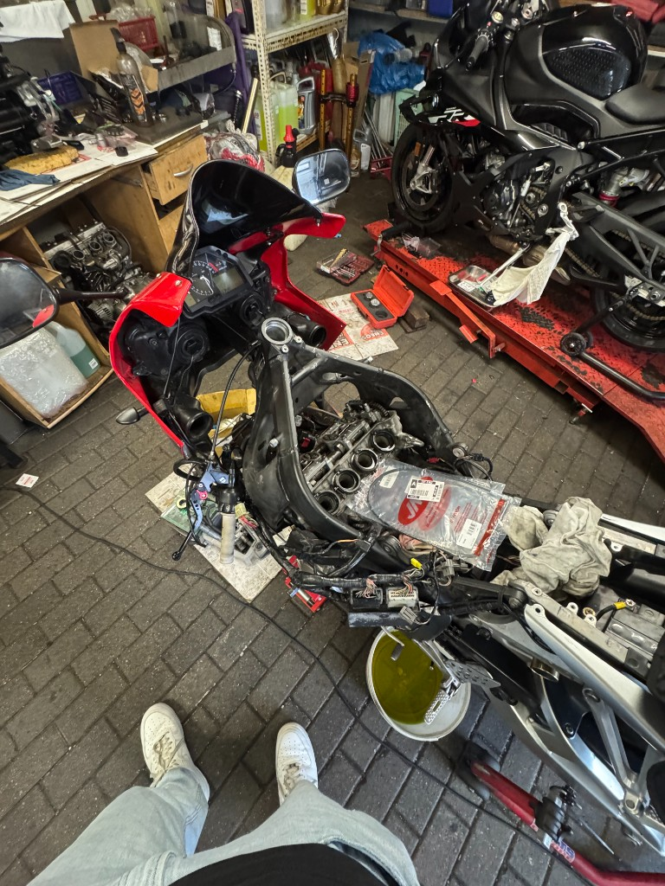
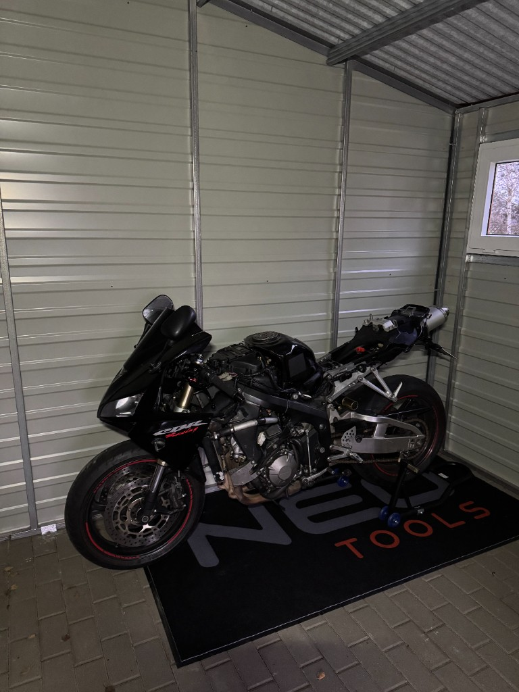
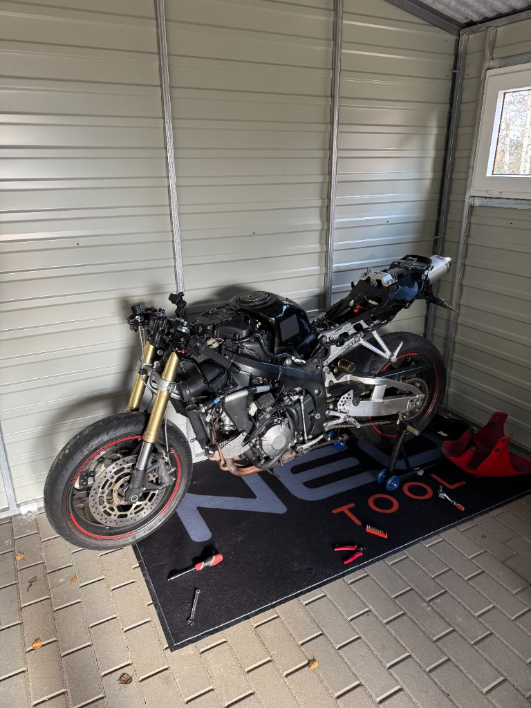

Motocykle · trasy · społeczność
Jedziemy razem. Subskrybuj, obserwuj.
OstryMoto to filmy, trasy i społeczność wokół pasji do dwóch kółek.
Galeria














Wideo
Dziennik tras
Tor, droga i garaż. Filtr zostawia równy zestaw, a licznik sumuje kilometry.
Brak tras w tej kategorii.
Współpraca & kontakt
Marki motocyklowe, eventy, media — napisz, ustalimy szczegóły.
Social media
Wybierz platformę — tam dzieje się akcja na co dzień.